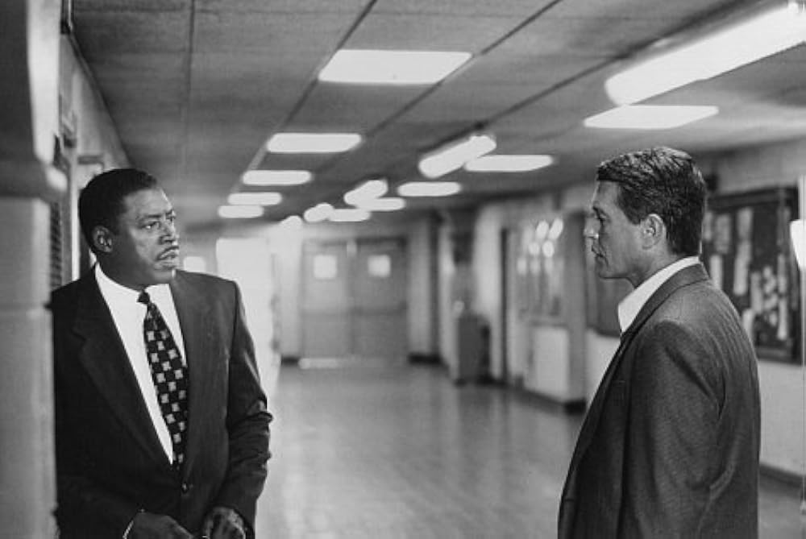
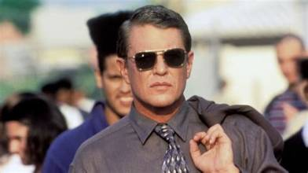

Il y a eu une période au collège où chaque journée ressemblait à une bataille.
Les harceleurs. Les couloirs. Cette sensation permanente d'être seul contre quelque chose de plus grand que soi.
C'est dans l'armoire de mon grand-père que je trouvais du réconfort. Les films m'ont permis de m'évader, de tenir, de me construire. Chaque cassette était une façon de respirer autrement.
Et un soir, je tombe sur celui-là.
Un ancien militaire qui débarque dans un lycée difficile. Qui voit ce que personne ne veut voir. Et qui décide de rétablir les choses — pas avec des mots, avec des actes.
J'avais besoin de voir ça.
Pas pour la violence. Pour la justice.
Ce soir, on rouvre la cassette.

The Substitute — Tom Berenger, 1996
The Substitute.
The Substitute.
1996. Réalisé par Robert Mandel. Avec Tom Berenger, Ernie Hudson et Marc Anthony.
Un film produit par Live Entertainment, distribué par Orion Pictures, sorti en salles aux États-Unis le 19 avril 1996 dans 1 742 cinémas.
La jaquette promettait de l'action, un lycée difficile, un homme seul contre un système corrompu.
Ce qu'on trouve à l'intérieur dépasse la promesse.
Pas un simple film d'action. Un film sur ce qui se passe quand l'institution abandonne ceux qu'elle est censée protéger — et sur ce qu'il faut parfois pour rétablir l'ordre là où tout le monde a renoncé.
Tom Berenger porte le film avec une sobriété qui rend chaque scène crédible.
Et ce lycée de Miami ressemble à trop d'endroits réels pour être ignoré.
1996.
Le cinéma d'action américain est en pleine transition. Les grands noms des années 80 cherchent de nouveaux territoires. Schwarzenegger, Stallone, Willis — les franchises s'essoufflent. Le public action se fragmente.
C'est dans ce contexte que Tom Berenger arrive dans The Substitute.
Berenger n'est pas une star d'action au sens classique. Il vient du drame — Platoon lui a valu une nomination aux Oscars en 1987. Mais au milieu des années 90, sa carrière cherche une direction. The Substitute lui offre quelque chose d'inattendu — un rôle d'homme d'action ancré dans le réel, sans superpouvoirs, sans invincibilité.
Shale est un ancien mercenaire. Pas un héros. Quelqu'un de cassé par ce qu'il a vécu, qui trouve dans ce lycée de Miami en déroute une nouvelle mission.
Robert Mandel réalise avec une économie de moyens efficace. Pas de budget spectaculaire — de la tension, des personnages, un décor qui fonctionne comme un territoire à conquérir.
Et Miami comme terrain de jeu — pas la ville glamour de Miami Vice, mais ses quartiers défavorisés, ses lycées abandonnés par le système, ses gamins livrés à eux-mêmes.

Ernie Hudson & Tom Berenger — The Substitute, 1996
Shale est un ancien mercenaire.
Quand sa petite amie — professeure dans un lycée difficile de Miami — est agressée par des membres d'un gang qui contrôle l'établissement, il décide d'infiltrer l'école en se faisant passer pour un remplaçant.
Ce qu'il trouve à l'intérieur est pire que ce qu'il imaginait.
Un lycée livré aux gangs, des professeurs terrorisés, une direction corrompue, des élèves pris en otage par un système qui a abdiqué toute autorité. Pas une simple école difficile — un territoire ennemi.
Shale n'est pas là pour enseigner. Il est là pour rétablir l'ordre.
Le film ne prétend pas que la violence est une solution. Il montre ce qui se passe quand toutes les autres ont été épuisées. Quand les institutions ont failli, quand les adultes censés protéger ont regardé ailleurs.
Pas un film sur l'éducation. Un film sur ce qui reste quand elle a échoué.
Ce film aurait pu être un simple film d'action dans un lycée.
Il ne l'est pas.
Ce qui le distingue c'est Tom Berenger. Pas sa technique — sa présence. Shale n'est pas un héros invincible. C'est un homme fatigué, abîmé par des années de violence professionnelle, qui trouve dans ce lycée quelque chose qu'il n'attendait plus — une cause qui vaut la peine.
Berenger joue ça avec une sobriété qui rend tout crédible. Pas de posture, pas de gesticulation. Juste un homme qui observe, qui comprend, et qui agit. Cette économie de moyens transforme chaque scène d'action en quelque chose de plus lourd — parce qu'on sait que le personnage paie un prix réel pour chaque décision.
Et le lycée lui-même fonctionne comme un personnage. Miami 1996, un établissement où les gangs font la loi, où les professeurs survivent plus qu'ils n'enseignent, où les élèves ont appris à ne compter sur personne. Ce n'est pas une caricature — c'est une réalité que le film regarde en face sans détourner les yeux.
The Substitute est un film d'action. Mais il pose une question que peu de films d'action osent poser.
Que se passe-t-il quand les institutions censées protéger les plus vulnérables abdiquent ?
Et qui reste ?

Tom Berenger — The Substitute, Miami 1996
The Substitute n'a pas eu de chance avec le moment.
Le film démarre pourtant bien — deuxième place du box-office américain à sa sortie, avec près de 15 millions de dollars au compteur en fin de course.
Mais 1996 est l'année où le cinéma d'action américain regarde ailleurs — vers les blockbusters numériques, vers les franchises, vers les effets spéciaux qui commencent à redéfinir ce que le grand public attend d'un film d'action.
Un film comme The Substitute — ancré dans le réel, sans explosions numériques, sans star au sens commercial du terme — n'avait aucune place dans cette conversation.
Sa sortie en salles a été brève. Distribué par un Orion Pictures alors affaibli, sans grosse campagne marketing, le film quitte l'affiche en quelques semaines et s'efface vite du débat public.
Et pourtant il trouve son public. Celui des cassettes qu'on loue après coup, des samedis soir, de ceux qui cherchent quelque chose de solide sans savoir exactement quoi.
Mais ce public-là ne fait pas les titres.
Il regarde, il ressent, et il passe à autre chose. Sans jamais savoir que ce film méritait mieux.
Parce que ce film parle de quelque chose de réel.
Pas de superhéros. Pas de complots internationaux. Pas de gadgets. Un lycée, des gamins abandonnés par le système, et un homme qui décide que ça suffit.
En 2026, cette réalité n'a pas disparu. Les établissements difficiles existent toujours. Les gamins qui se battent chaque jour pour survivre dans des couloirs hostiles existent toujours. Et le sentiment d'être seul face à quelque chose de plus grand que soi — celui-là, il ne disparaît jamais vraiment.
The Substitute résonne différemment selon là où on l'a regardé pour la première fois. Pour certains c'est un film d'action efficace. Pour d'autres — ceux qui ont connu ces couloirs, ces harceleurs, cette solitude — c'est autre chose.
Un miroir. Une forme de justice par procuration. La preuve que quelqu'un, quelque part, avait compris ce que c'était.
J'avais besoin de voir ça quand je l'ai trouvé dans l'armoire de mon grand-père.
Trente ans plus tard, je comprends pourquoi.
The Substitute n'est pas un grand film au sens où l'entend la critique.
Mais certains films n'ont pas besoin d'être grands pour être importants.
Importants pour ceux qui les ont trouvés au bon moment. Dans la bonne armoire. Pendant la bonne période de leur vie.
Ce film m'a accompagné à une époque où j'en avais besoin. Il m'a montré qu'il était possible de ne pas subir. Que la justice existait, même fictive, même imparfaite.
Les films de mon grand-père m'ont construit.
Celui-là en particulier.
La cassette est dans le lecteur. On rembobine.
Titre original
The Substitute
Pays
États-Unis
Genre
Action / Thriller
Durée
114 min
Producteur
Live Entertainment
Avec aussi
Marc Anthony · William Forsythe
Fil conducteur
Lycée Miami I — Saison 1
Écho
Only the Strong (S2) — Lycée Miami II
SOMEDAY — EP. 08